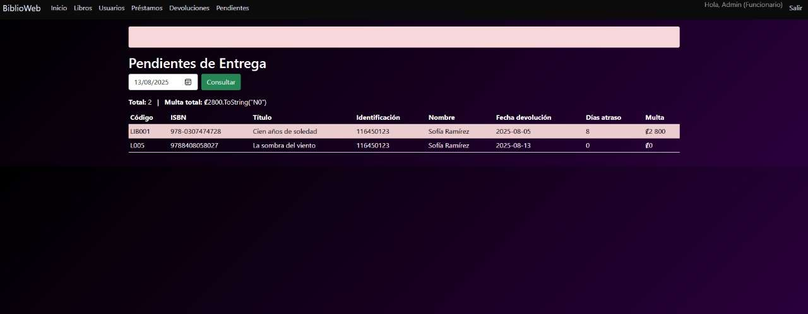

Descripción:
Este sistema permite gestionar el préstamo y devolución de libros en una biblioteca. Incluye registro de usuarios, control de inventario, cálculo de multas por retraso y consultas de préstamos activos.
Curso: Programación II
Tecnologías utilizadas: